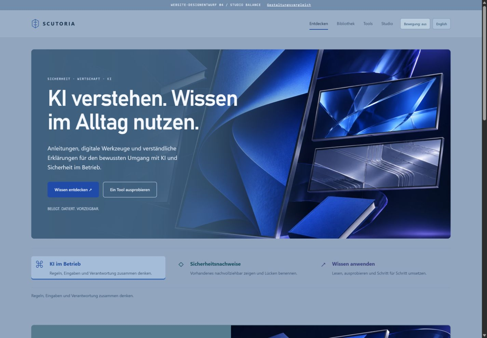

Signal Studio · ursprünglich
Dein Favorit in der Bildwirkung, dir insgesamt zu dunkel.
Dein Favorit in der Bildwirkung, dir insgesamt zu dunkel.

Ursprüngliche Studio-Bildwelt. Etwas dunkleres Graublau, ergänzt um Petrol, Indigo und Silberblau.

Die Offenheit gefällt dir, die gesamte Gestaltung ist dir zu hell.